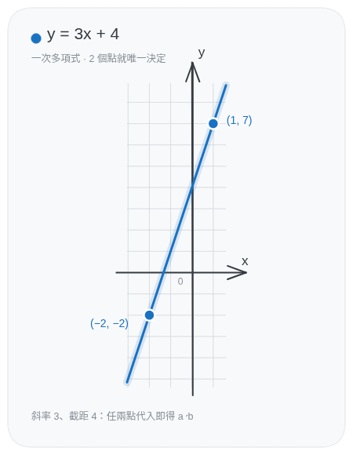
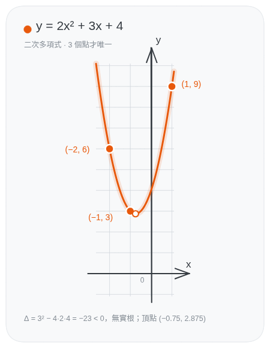

01
為什麼需要 Galois Field？
普通整數會洩漏大小、數值無限膨脹，除法也做不到精準還原。
機密分享 · 期末報告
從一次函數的直覺出發，理解 (r, n) 門檻式機密分享：
為什麼「點」的數量，就是解密的門檻。
1-1 · 一次多項式
以 y = 3x + 4 為例，這條線上可以取出無限多個點：
只有一個點：沒辦法得知原本的多項式長怎樣。
有兩個點：就能唯一決定 y = 3x + 4。

1-2 · 二次多項式
以 y = 2x2 + 3x + 4 為例，拋物線上同樣有無限多個點：
需要其中 三個點，才能解出原本的多項式 y = 2x2 + 3x + 4。
→ 一般化：r − 1 次多項式，就需要 r 個點。

1-3 · 核心想法
常數項 a0 就是機密本身
要分享的資料（一個數字）直接放進 a0，其餘位置不留痕跡。
其他係數全部隨機
少於 r 個點時，每個可能的 Secret 都一樣有可能 ——
這就是「看不出來」的來源。
1-4 · 門檻機制
n 個 Share 分給 n 個人；任 r 個人才能解密，少於 r 個則完全無法還原。
1-5 · 本章小結
本章建立了「點 ↔ 多項式」的直覺；真正動手之前，還有三個問題要回答。
01
普通整數會洩漏大小、數值無限膨脹，除法也做不到精準還原。
02
拉格朗日插值、行列式（克拉瑪公式）、高斯消去法，三條路都能取回 a0。
03
把 R、G、B 彩度當成 Secret，在 GF(28) 裡逐像素拆分與還原。
下一章：先用例子說明「只用普通整數」會壞在哪裡，再走進 GF(p) 與 GF(28) 的運算。